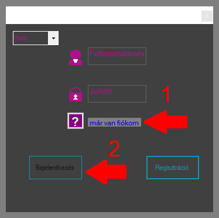
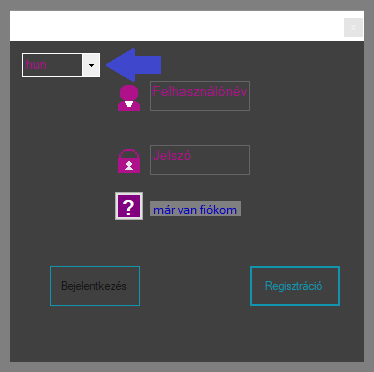

A bejelentkezés a főmenüben történik. Bejelentkezni a felhasználónév és a jelszó megadásával lehetséges
A Sikeres bejelentkezés után a főmenü bezárul és megnyílik az esemény kezelő felület.
segítség a Bejelentkezéshez

Bejelentkezéshez szükséges adatok
regisztrációhoz szükséges adatok
maximum 50 karakter hosszúságú lehet a hossza
nem ajánlott mind az 50 karaktert felhasználni
jelszó
maximum 10 karakter hosszúságú lehet,
A program nem igényel bonyolult felhasználónév és jelszó kombinációt
Nincsenek megkötések bármilyen speciális karakter elfogadható
vezetéknév
keresztnév
Nyelv beállyítása
Két nyelvi beállítás válaszható: angol és magyar.
Alapértelmezetten magyar nyelvű. A nyelv egy legördülőmenüből választhatók ki.
segítség a Nyelv kiválasztásához
